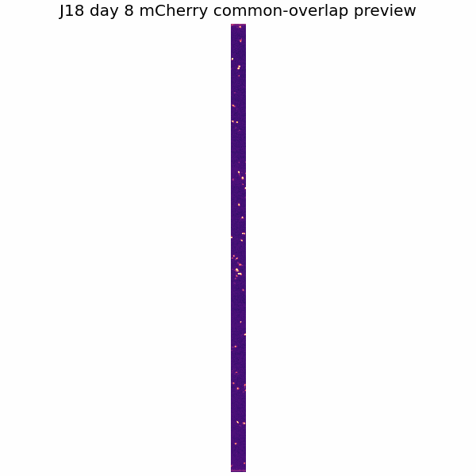
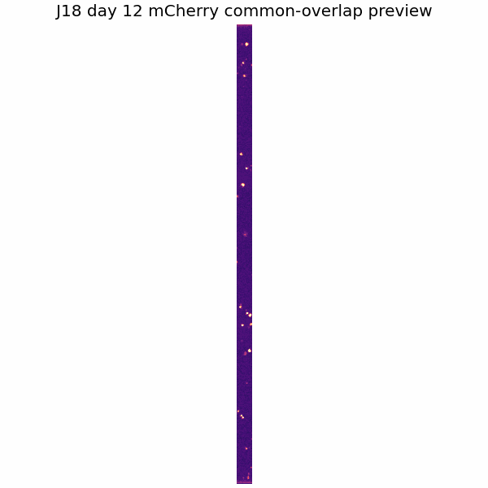
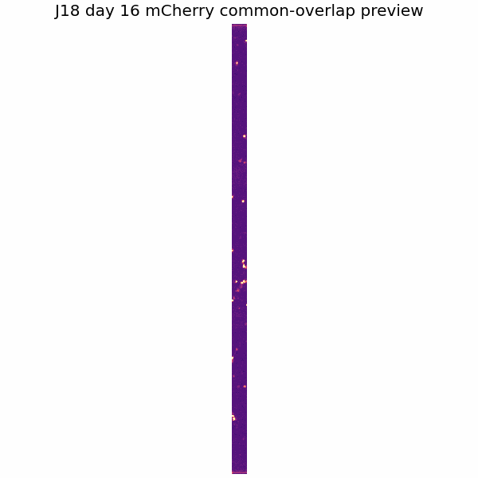
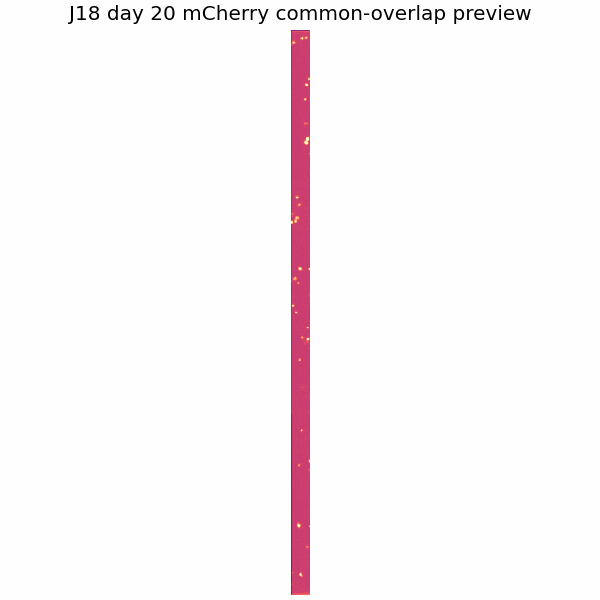
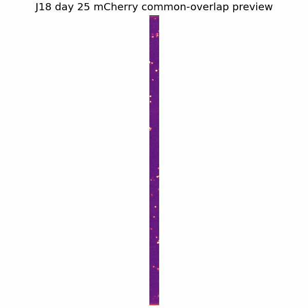
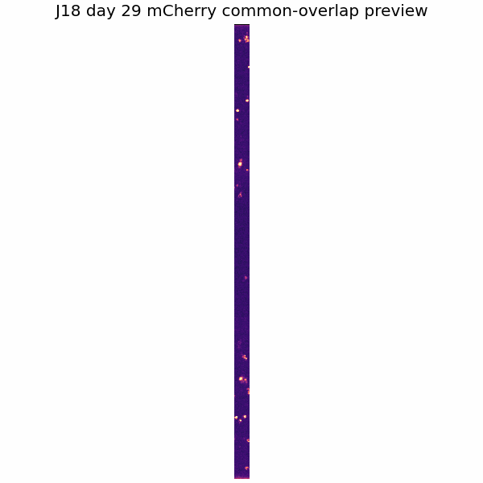
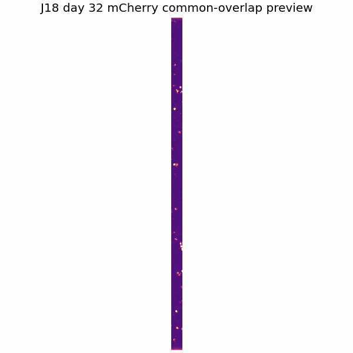
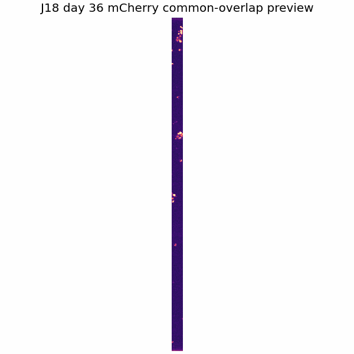
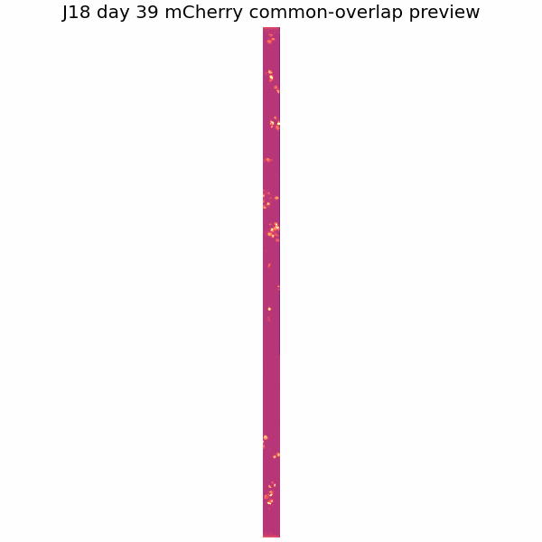

ROI Readiness
6 large-shift days. Neuron ROI crops have not been generated yet.
Pass days: 8, 29, 32
Review days: 12, 25
Exclude from ROI tracking: 16, 20, 36, 39
Available Outputs
| Registered stack available | yes |
| Common-overlap stack available | yes |
| QC montage available | yes |
| Neuron ROIs generated | not yet |
- Registered full
- Large microscopy file stored locally/shared drive
- Common overlap
- Large microscopy file stored locally/shared drive
- QC montage
- LOCAL_PROCESSED_OUTPUT/full_mcherry_valid_queue_abc/wells/J18/qc/J18_registration_qc_montage.png
- QC CSV
- LOCAL_PROCESSED_OUTPUT/full_mcherry_valid_queue_abc/wells/J18/qc/J18_registration_qc.csv
Dashboard Previews









Per-Day QC
| Day | dy | dx | |shift| | Overlap | Status | Action |
|---|---|---|---|---|---|---|
| 8 | 0.0 | 0.0 | 0.0 | 1.000 | pass | pass |
| 12 | 0.0 | -913.3 | 913.3 | 0.682 | warning_large_shift | review |
| 16 | 0.0 | -1327.1 | 1327.1 | 0.537 | warning_extreme_shift | exclude_from_roi_tracking |
| 20 | 0.0 | 1423.0 | 1423.0 | 0.504 | warning_extreme_shift | exclude_from_roi_tracking |
| 25 | 0.0 | 725.9 | 725.9 | 0.747 | warning_large_shift | review |
| 29 | 0.0 | -144.3 | 144.3 | 0.950 | pass | pass |
| 32 | 0.0 | -112.9 | 112.9 | 0.961 | pass | pass |
| 36 | 0.0 | -1151.8 | 1151.8 | 0.598 | warning_low_overlap | exclude_from_roi_tracking |
| 39 | 0.0 | -1348.3 | 1348.3 | 0.530 | warning_extreme_shift | exclude_from_roi_tracking |
ROI / neuron candidates
5 preliminary pass-only ROI candidates generated. Manual identity status is uncertain_identity by default.
Review days listed but not used: 12|25
Excluded days: 16|20|36|39
Full Registered vs Overlap-Only
Overlap-only views remove non-shared edge regions across days to reduce cells popping in/out due to field-of-view drift. Full registered views are retained for context but should be interpreted cautiously.
- Full registered context
- Large microscopy file stored locally/shared drive
- Overlap-only analysis stack
- Large microscopy file stored locally/shared drive
- Overlap retained
- 3.3% (96 x 2868 px from 2868 x 2868 px)
- Overlap warning
- very_low_overlap_retained
- Large-shift days
- 6
- ROI/metrics source
- registered_common_overlap
- Recommended use
- review_only